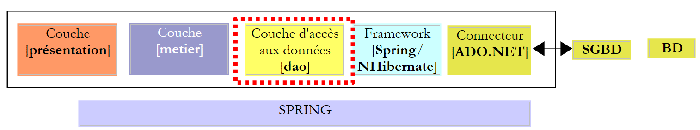
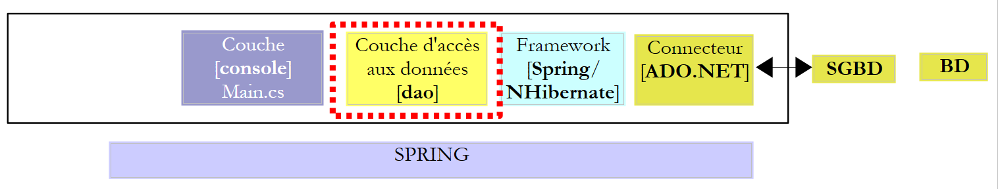
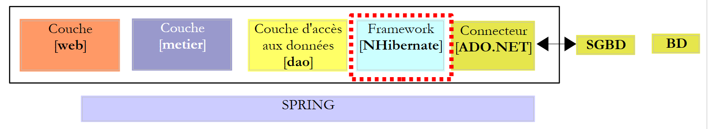

13. L'application [SimuPaie] – version 9 – intégration Spring / NHibernate
Nous nous proposons ici de reprendre l'application ASP.NET à trois couches de la version 7 [pam-v7-3tier-nhibernate-multivues-multipages]. L'architecture en couches de l'application était la suivante :
 |
Ci-dessus, la couche [dao] avait été implémentée avec le framework NHibernate. Le framework Spring n'avait été utilisé que pour l'intégration des couches entre-elles. Le framework Spring offre des classes utilitaires pour travailler avec le framework Nhibernate. L'utilisation de ces classes rend le code de la couche [dao] plus simple à écrire. L'architecture précédente évolue comme suit :
 |
A cause de la structure en couches utilisée, l'utilisation de l'intégration Spring / NHibernate entraîne la modification de la seule couche [dao]. Les couches [presentation] (web / ASP.NET) et [metier] n'auront pas à être modifiées. C'est là le principal avantage des architectures en couches intégrées par Spring.
Dans la suite, nous allons construire la couche [dao] avec [Spring / NHibernate] en commentant le code d'une solution fonctionnelle. Nous ne chercherons pas à donner toutes les possibilités de configuration ou d'utilisation du framework [Spring / Nhibernate]. Le lecteur pourra adapter la solution proposée à ses propres problèmes en s'aidant de la documentation de Spring.NET [http://www.springframework.net/documentation.html] (juin 2010).
La démarche suivie pour construire les couches [dao] et [metier] est celle de la version 3 décrite au paragraphe 7. Celle suivie pour la couche [présentation] est celle de la version 7 décrite au paragraphe 11.
13.1. La couche [dao] d'accès aux données
 |
13.1.1. Le projet Visual Studio C# de la couche [dao]
Le projet Visual Studio de la couche [dao] est le suivant :
 |
- en [1], le projet dans sa globalité
- le dossier [pam] contient les classes du projet ainsi que la configuration des entités NHibernate
- les fichiers [App.config] et [Dao.xml] configurent le framework Spring / NHibernate. Nous aurons à décrire le contenu de ces deux fichiers.
- en [2], les différentes classes du projet
- dans le dossier [entites] nous retrouvons les entités NHibernate étudiées dans le projet [pam-dao-nhibernate]
- dans le dossier [service], nous trouvons l'interface [IPamDao] et son implémentation avec le framework Spring / NHibernate [PamDaoSpringNHibernate]. Nous aurons à écrire cette nouvelle implémentation de l'interface [IPamDao]
- le dossier [tests] contient les mêmes tests que le projet [pam-dao-nhibernate]. Ils testent la même interface [IPamdao].
- en [3], les références du projet. L'intégration Spring / NHibernate nécessite deux nouvelles DLL [Spring.Data] et [Spring.Data.NHibernate12]. Ces DLL sont disponibles dans le framework Spring.Net. Elles ont été ajoutées au dossier [lib] des DLL [4] :
 |
Dans les références [3] du projet, on trouve les DLL suivantes :
- NHibernate : pour l'ORM NHibernate
- MySql.Data : le pilote ADO.NET du SGBD MySQL
- Spring.Core : pour le framework Spring qui assure l'intégration des couches
- log4net : une bibliothèque de logs
- nunit.framework : une bibliothèque de tests unitaires
- Spring.Data et Spring.Data.NHibernate12 : assurent le support Spring / NHibernate.
Ces références ont été prises dans le dosssier [lib] [4]. On prendra soin que toutes ces références aient leur propriété "Copie locale" à "True" [5] :
13.1.2. La configuration du projet C
Le projet est configuré de la façon suivante :
 |
- en [1], le nom de l'assembly du projet est [pam-dao-spring-nhibernate]. Ce nom intervient dans divers fichiers de configuration du projet.
13.1.3. Les entités de la couche [dao]
 |
Les entités (objets) nécessaires à la couche [dao] ont été rassemblées dans le dossier [entites] [1] du projet. Ces entités sont celles du projet [pam-dao-nhibernate] à une différence près dans les fichiers de configuration NHibernate. Prenons par exemple, le fichier [Employe.hbm.xml] :
- en [2], le fichier est configuré pour être incorporé dans l'assembly du projet
Son contenu est le suivant :
<?xml version="1.0" encoding="utf-8" ?>
<hibernate-mapping xmlns="urn:nhibernate-mapping-2.2"
namespace="Pam.Dao.Entites" assembly="pam-dao-spring-nhibernate">
<class name="Employe" table="EMPLOYES">
<id name="Id" column="ID">
<generator class="native" />
</id>
<version name="Version" column="VERSION"/>
<property name="SS" column="SS" length="15" not-null="true" unique="true"/>
<property name="Nom" column="NOM" length="30" not-null="true"/>
<property name="Prenom" column="PRENOM" length="20" not-null="true"/>
<property name="Adresse" column="ADRESSE" length="50" not-null="true" />
<property name="Ville" column="VILLE" length="30" not-null="true"/>
<property name="CodePostal" column="CP" length="5" not-null="true"/>
<many-to-one name="Indemnites" column="INDEMNITE_ID" cascade="all" lazy="false"/>
</class>
</hibernate-mapping>
- ligne 2 : l'attribut assembly indique que le fichier [Employe.hbm.xml] sera trouvé dans l'assembly [pam-dao-spring-nhibernate]
13.1.4. Configuration Spring / NHibernate
Revenons au projet Visual C# :
 |
- en [1], les fichiers [App.config] et [Dao.xml] configurent l'intégration Spring / NHibernate
13.1.4.1. Le fichier [App.config]
Le fichier [App.config] est le suivant :
<?xml version="1.0" encoding="utf-8" ?>
<configuration>
<!-- sections de configuration -->
<configSections>
<sectionGroup name="spring">
<section name="parsers" type="Spring.Context.Support.NamespaceParsersSectionHandler, Spring.Core" />
<section name="objects" type="Spring.Context.Support.DefaultSectionHandler, Spring.Core" />
<section name="context" type="Spring.Context.Support.ContextHandler, Spring.Core" />
</sectionGroup>
<section name="log4net" type="log4net.Config.Log4NetConfigurationSectionHandler,log4net" />
</configSections>
<!-- configuration Spring -->
<spring>
<parsers>
<parser type="Spring.Data.Config.DatabaseNamespaceParser, Spring.Data" />
</parsers>
<context>
<resource uri="Dao.xml" />
</context>
</spring>
<!-- This section contains the log4net configuration settings -->
<!-- NOTE IMPORTANTE : les logs ne sont pas actifs par défaut. Il faut les activer par programme
avec l'instruction log4net.Config.XmlConfigurator.Configure();
! -->
<log4net>
<appender name="ConsoleAppender" type="log4net.Appender.ConsoleAppender">
<layout type="log4net.Layout.PatternLayout">
<conversionPattern value="%-5level %logger - %message%newline" />
</layout>
</appender>
<!-- Set default logging level to DEBUG -->
<root>
<level value="DEBUG" />
<appender-ref ref="ConsoleAppender" />
</root>
<!-- Set logging for Spring. Logger names in Spring correspond to the namespace -->
<logger name="Spring">
<level value="INFO" />
</logger>
<logger name="Spring.Data">
<level value="DEBUG" />
</logger>
<logger name="NHibernate">
<level value="DEBUG" />
</logger>
</log4net>
</configuration>
Le fichier [App.config] ci-dessus configure Spring (lignes 5-9, 15-22), log4net (ligne 10, lignes 28-53) mais pas NHibernate. Les objets de Spring ne sont pas configurés dans [App.config] mais dans le fichier [Dao.xml] (ligne 20). La configuration de Spring / NHibernate qui consiste à déclarer des objets Spring particuliers sera donc trouvée dans ce fichier.
13.1.4.2. Le fichier [Dao.xml]
Le fichier [Dao.xml] qui rassemble les objets gérés par Spring est le suivant :
<?xml version="1.0" encoding="utf-8" ?>
<objects xmlns="http://www.springframework.net"
xmlns:db="http://www.springframework.net/database">
<!-- Referenced by main application context configuration file -->
<description>
Application Spring / NHibernate
</description>
<!-- Database and NHibernate Configuration -->
<db:provider id="DbProvider"
provider="MySql.Data.MySqlClient"
connectionString="Server=localhost;Database=dbpam_nhibernate;Uid=root;Pwd=;"/>
<object id="NHibernateSessionFactory" type="Spring.Data.NHibernate.LocalSessionFactoryObject, Spring.Data.NHibernate12">
<property name="DbProvider" ref="DbProvider"/>
<property name="MappingAssemblies">
<list>
<value>pam-dao-spring-nhibernate</value>
</list>
</property>
<property name="HibernateProperties">
<dictionary>
<entry key="hibernate.dialect" value="NHibernate.Dialect.MySQLDialect"/>
<entry key="hibernate.show_sql" value="false"/>
</dictionary>
</property>
<property name="ExposeTransactionAwareSessionFactory" value="true" />
</object>
<!-- gestionnaire de transactions -->
<object id="transactionManager"
type="Spring.Data.NHibernate.HibernateTransactionManager, Spring.Data.NHibernate12">
<property name="DbProvider" ref="DbProvider"/>
<property name="SessionFactory" ref="NHibernateSessionFactory"/>
</object>
<!-- Hibernate Template -->
<object id="HibernateTemplate" type="Spring.Data.NHibernate.Generic.HibernateTemplate">
<property name="SessionFactory" ref="NHibernateSessionFactory" />
<property name="TemplateFlushMode" value="Auto" />
<property name="CacheQueries" value="true" />
</object>
<!-- Data Access Objects -->
<object id="pamdao" type="Pam.Dao.Service.PamDaoSpringNHibernate, pam-dao-spring-nhibernate" init-method="init" destroy-method="destroy">
<property name="HibernateTemplate" ref="HibernateTemplate"/>
</object>
</objects>
- les lignes 11-13 configurent la connexion à la base de données [dbpam_nhibernate]. On y trouve :
- le provider ADO.NET nécessaire à la connexion, ici le provider du SGBD MySQL. Cela implique d'avoir la DLL [Mysql.Data] dans les références du projet.
- la chaîne de connexion à la base de données (serveur, nom de la base, propriétaire de la connexion, son mot de passe)
- les lignes 15-29 configurent la SessionFactory de NHibernate, l'objet qui sert à obtenir des sessions NHibernate. On rappelle que toute opération sur la base de données se fait à l'intérieur d'une session NHibernate. Ligne 15, on peut voir que la SessionFactory est implémentée par la classe Spring Spring.Data.NHibernate.LocalSessionFactoryObject trouvée dans la DLL Spring.Data.NHibernate12.
- ligne 16 : la propriété DbProvider fixe les paramètres de la connexion à la base de données (provider ADO.NET et chaîne de connexion). Ici cette propriété référence l'objet DbProvider défini précédemment aux lignes 11-13.
- lignes 17-20 : fixent la liste des assembly contenant des fichiers [*.hbm.xml] configurant des entités gérées par NHibernate. La ligne 19 indique que ces fichiers seront trouvés dans l'assembly du projet. Nous rappelons que ce nom est trouvé dans les propriétés du projet C#. Nous rappelons également que tous les fichiers [*.hbm.xml] ont été configurés pour être incorporés dans l'assembly du projet.
- lignes 22-27 : propriétés spécifiques de NHibernate.
- ligne 24 : le dialecte SQL utilisé sera celui de MySQL
- ligne 25 : le SQL émis par NHibernate n'apparaîtra pas dans les logs de la console. Mettre cette propriété à true permet de connaître les ordres SQL émis par NHibernate. Cela peut aider à comprendre par exemple pourquoi une application est lente lors de l'accès à la base.
- ligne 28 : la propriété ExposeTransactionAwareSessionFactory à true va faire que Spring va gérer les annotations de gestion des transactions qui seront trouvées dans le code C#. Nous y reviendrons lorsque nous écrirons la classe implémentant la couche [dao].
- les lignes 32-36 définissent le gestionnaire de transactions. Là encore ce gestionnaire est une classe Spring de la DLL Spring.Data.NHibernate12. Ce gestionnaire a besoin de connaître les paramètres de connexion à la base de données (ligne 34) ainsi que la SessionFactory de NHibernate (ligne 35).
- les lignes 39-43 définissent les propriétés de la classe HibernateTemplate, là encore une classe de Spring. Cette classe sera utilisée comme classe utilitaire dans la classe implémentant la couche [dao]. Elle facilite les interactions avec les objets NHibernate. Cette classe a certaines propriétés qu'il faut initialiser :
- ligne 40 : la SessionFactory de NHibernate
- ligne 41 : la propriété TemplateFlushMode fixe le mode de synchronisation du contexte de persistance NHibernate avec la base de données. Le mode Auto fait qu'il y aura synchronisation :
- à la fin d'une transaction
- avant une opération select
- ligne 42 : les requêtes HQL (Hibernate Query Language) seront mises en cache. Cela peut amener un gain de performance.
- les lignes 46-48 définissent la classe d'implémentation de la couche [dao]
- ligne 46 : la couche [dao] va être implémentée par la classe [PamdaoSpringNHibernate] de la DLL [pam-dao-spring-nhibernate]. Après instanciation de la classe, la méthode init de la classe sera immédiatement exécutée. A la fermeture du conteneur Spring, la méthode destroy de la classe sera exécutée.
- ligne 47 : la classe [PamDaoSpringNHibernate] aura une propriété HibernateTemplate qui sera initialisée avec la propriété HibernateTemplate de la ligne 39.
13.1.5. Implémentation de la couche [dao]
13.1.5.1. Le squelette de la classe d'implémentation
L'interface [IPamDao] est la même que dans le projet [pam-dao-nhibernate] :
using Pam.Dao.Entites;
namespace Pam.Dao.Service {
public interface IPamDao {
// liste de toutes les identités des employés
Employe[] GetAllIdentitesEmployes();
// un employé particulier avec ses indemnités
Employe GetEmploye(string ss);
// liste de toutes les cotisations
Cotisations GetCotisations();
}
}
- ligne 1 : on importe l'espace de noms des entités de la couche [dao].
- ligne 3 : la couche [dao] est dans l'espace de noms [Pam.Dao.Service]. Les éléments de l'espace de noms [Pam.Dao.Entites] peuvent être créés en plusieurs exemplaires. Les éléments de l'espace de noms [Pam.Dao.Service] sont créés en un unique exemplaire (singleton). C'est ce qui a justifié le choix des noms des espaces de noms.
- ligne 4 : l'interface s'appelle [IPamDao]. Elle définit trois méthodes :
- ligne 6, [GetAllIdentitesEmployes] rend un tableau d'objets de type [Employe] qui représente la liste des assistantes maternelles sous une forme simplifiée (nom, prénom, SS).
- ligne 8, [GetEmploye] rend un objet [Employe] : l'employé qui a le n° de sécurité sociale passé en paramètre à la méthode avec les indemnités liées à son indice.
- ligne 10, [GetCotisations] rend l'objet [Cotisations] qui encapsule les taux des différentes cotisations sociales à prélever sur le salaire brut.
Le squelette de la classe d'implémentation de cette interface avec le support Spring / NHibernate pourrait être le suivant :
using System;
using System.Collections;
using System.Collections.Generic;
using Pam.Dao.Entites;
using Spring.Data.NHibernate.Generic.Support;
using Spring.Transaction.Interceptor;
namespace Pam.Dao.Service {
public class PamDaoSpringNHibernate : HibernateDaoSupport, IPamDao {
// champs privés
private Cotisations cotisations;
private Employe[] employes;
// init
[Transaction(ReadOnly = true)]
public void init() {
...
}
// suppression objet
public void destroy() {
if (HibernateTemplate.SessionFactory != null) {
HibernateTemplate.SessionFactory.Close();
}
}
// liste de toutes les identités des employés
public Employe[] GetAllIdentitesEmployes() {
return employes;
}
// un employé particulier avec ses indemnités
[Transaction(ReadOnly = true)]
public Employe GetEmploye(string ss) {
....
}
// liste des cotisations
public Cotisations GetCotisations() {
return cotisations;
}
}
}
- ligne 9 : la classe [PamDaoSpringNHibernate] implémente bien l'interface de la couche [dao] [IPamDao]. Elle dérive également de la classe Spring [HibernateDaoSupport]. Cette classe a une propriété [HibernateTemplate] qui est initialisée par la configuration Spring qui a été faite (ligne 2 ci-dessous) :
<object id="pamdao" type="Pam.Dao.Service.PamDaoSpringNHibernate, pam-dao-spring-nhibernate" init-method="init" destroy-method="destroy">
<property name="HibernateTemplate" ref="HibernateTemplate"/>
</object>
- ligne 1 ci-dessus, on voit que la définition de l'objet [pamdao] indique que les méthodes init et destroy de la classe [PamDaoSpringNHibernate] doivent être exécutées à des moments précis. Ces deux méthodes sont bien présentes dans la classe aux lignes 16 et 21.
- lignes 15, 34 : annotations qui font que la méthode annotée sera exécutée dans une transaction. L'attribut ReadOnly=true indique que la transaction est en lecture seule. La méthode qui est exécutée dans la transaction peut lancer une exception. Dans ce cas, un Rollback automatique de la transaction est fait par Spring. Cette annotation élimine le besoin de gérer une transaction au sein de la méthode.
- ligne 16 : la méthode init est exécutée par Spring immédiatement après l'instanciation de la classe. Nous verrons qu'elle a pour but d'initialiser les champs privés des lignes 11 et 12. Elle se déroulera dans une transaction (ligne 15).
- les méthodes de l'interface [IPamDao] sont implémentées aux lignes 28, 35 et 40.
- lignes 28-30 : la méthode [GetAllIdentitesEmployes] se contente de rendre l'attribut de la ligne 12 initialisé par la méthode init.
- lignes 40-42 : la méthode [GetCotisations] se contente de rendre l'attribut de la ligne 11 initialisé par la méthode init.
13.1.5.2. Les méthodes utiles de la classe HibernateTemplate
Nous utiliserons les méthodes suivantes de la classe HibernateTemplate :
IList<T> Find<T>(string requete_hql) | exécute la requête HQL et rend une liste d'objets de type T |
IList<T> Find<T>(string requete_hql, object[]) | exécute une requête HQL paramétrée par des ?. Les valeurs de ces paramètres sont fournis par le tableau d'objets. |
IList<T> LoadAll<T>() | rend toutes les entités de type T |
Il existe d'autres méthodes utiles que nous n'aurons pas l'occasion d'utiliser qui permettent de retrouver, sauvegarder, mettre à jour et supprimer des entités :
T Load<T>(object id) | met dans la session NHibernate l'entité de type T ayant la clé primaire id. |
void SaveOrUpdate(object entité) | insère (INSERT) ou met à jour (UPDATE) l'objet entité selon que celui-ci a une clé primaire (UPDATE) ou non (INSERT). L'absence de clé primaire peut être configuré par l'attribut unsaved-values du fichier de configuration de l'entité. Après l'opération SaveOrUpdate, l'objet entité est dans la session NHibernate. |
void Delete(object entité) | supprime l'objet entité de la session NHibernate. |
13.1.5.3. Implémentation de la méthode init
La méthode init de la classe [PamDaoSpringNHibernate] est par configuration la méthode exécutée après instanciation par Spring de la classe. Elle a pour but de mettre en cache local, les identités simplifiées des employés (nom, prénom, SS) et les taux de cotisations. Son code pourrait être le suivant.
[Transaction(ReadOnly = true)]
public void init() {
try {
// on récupère la liste simplifiée des employés
IList<object[]> lignes = HibernateTemplate.Find<object[]>("select e.SS,e.Nom,e.Prenom from Employe e");
// on la met dans un tableau
employes = new Employe[lignes.Count];
int i = 0;
foreach (object[] ligne in lignes) {
employes[i] = new Employe() { SS = ligne[0].ToString(), Nom = ligne[1].ToString(), Prenom = ligne[2].ToString() };
i++;
}
// on met les taux de cotisations dans un objet
cotisations = (HibernateTemplate.LoadAll<Cotisations>())[0];
} catch (Exception ex) {
// on transforme l'exception
throw new PamException(string.Format("Erreur d'accès à la BD : [{0}]", ex.ToString()), 43);
}
}
- ligne 5 : une requête HQL est exécutée. Elle demande les champs SS, Nom, Prenom de toutes les entités Employé. Elle rend une liste d'objets. Si on avait demandé l'intégralité de l'employé sous la forme "select e from Employe e", on aurait récupéré une liste d'objets de type Employe.
- lignes 7-12 : cette liste d'objets est copiée dans un tableau d'ojets de type Employe.
- ligne 14 : on demande la liste de toutes les entités de type Cotisations. On sait que cette liste n'a qu'un élément. On récupère donc le premier élément de la liste pour avoir les taux de cotisations.
- les lignes 7 et 14 initialisent les deux champs privés de la classe.
13.1.5.4. Implémentation de la méthode GetEmploye
La méthode GetEmploye doit rendre l'entité Employé ayant un n° SS donné. Son code pourrait être le suivant :
[Transaction(ReadOnly = true)]
public Employe GetEmploye(string ss) {
IList<Employe> employés = null;
try {
// requête
employés = HibernateTemplate.Find<Employe>("select e from Employe e where e.SS=?", new object[]{ss});
} catch (Exception ex) {
// on transforme l'exception
throw new PamException(string.Format("Erreur d'accès à la BD lors de la demande de l'employé de n° ss [{0}] : [{1}]", ss, ex.ToString()), 41);
}
// a-t-on récupéré un employé ?
if (employés.Count == 0) {
// on signale le fait
throw new PamException(string.Format("L'employé de n° ss [{0}] n'existe pas", ss), 42);
} else {
return employés[0];
}
}
- ligne 6 : obtient la liste des employés ayant un n° SS donné
- ligne 12 : normalement si l'employé existe on doit obtenir une liste à un élément
- ligne 14 : si ce n'est pas le cas, on lance une exception
- ligne 16 : si c'est le cas, on rend le premier employé de la liste
13.1.5.5. Conclusion
Si on compare le code de la couche [dao] dans le cas d'une utilisation
- du seul framework NHibernate
- du framework Spring / NHibernate
on réalise que la seconde solution a permis d'écrire du code plus simple.
13.2. Tests de la couche [dao]
13.2.1. Le projet Visual Studio
Le projet Visual Studio a déjà été présenté. Rappelons-le :
 |
- en [1], le projet dans sa globalité
- en [2], les différentes classes du projet. Le dossier [tests] contient un test console [Main.cs] et un test unitaire [NUnit.cs].
- en [3], le programme [Main.cs] est compilé.
 |
- en [4], le fichier [NUnit.cs] n'est pas généré.
- le projet est une application console. La classe exécutée est celle précisée en [5], la classe du fichier [Main.cs].
13.2.2. Le programme de test console [Main.cs]
Le programme de test [Main.cs] est exécuté dans l'architecture suivante :
 |
Il est chargé de tester les méthodes de l'interface [IPamDao]. Un exemple basique pourrait être le suivant :
using System;
using Pam.Dao.Entites;
using Pam.Dao.Service;
using Spring.Context.Support;
namespace Pam.Dao.Tests {
public class MainPamDaoTests {
public static void Main() {
try {
// instanciation couche [dao]
IPamDao pamDao = (IPamDao)ContextRegistry.GetContext().GetObject("pamdao");
// liste des identités des employés
foreach (Employe Employe in pamDao.GetAllIdentitesEmployes()) {
Console.WriteLine(Employe.ToString());
}
// un employé avec ses indemnités
Console.WriteLine("------------------------------------");
Console.WriteLine(pamDao.GetEmploye("254104940426058"));
Console.WriteLine("------------------------------------");
// liste des cotisations
Cotisations cotisations = pamDao.GetCotisations();
Console.WriteLine(cotisations.ToString());
} catch (Exception ex) {
// affichage exception
Console.WriteLine(ex.ToString());
}
//pause
Console.ReadLine();
}
}
}
- ligne 11 : on demande à Spring une référence sur la couche [dao].
- lignes 13-15 : test de la méthode [GetAllIdentitesEmployes] de l'interface [IPamDao]
- ligne 18 : test de la méthode [GetEmploye] de l'interface [IPamDao]
- ligne 21 : test de la méthode [GetCotisations] de l'interface [IPamDao]
Spring, NHibernate et log4net sont configurés par le fichier [App.config] étudié au paragraphe 13.1.4.1.
L'exécution faite avec la base de données décrite au paragraphe 6.2 donne le résultat console suivant :
- lignes 1-2 : les 2 employés de type [Employe] avec les seules informations [SS, Nom, Prenom]
- ligne 4 : l'employé de type [Employe] ayant le n° de sécurité sociale [254104940426058]
- ligne 5 : les taux de cotisations
13.2.3. Tests unitaires avec NUnit
Nous passons maintenant à un test unitaire NUnit. Le projet Visual Studio de la couche [dao] va évoluer de la façon suivante :
 |
- en [1], le programme de test [NUnit.cs]
- en [2,3], le projet va générer une DLL nommé [pam-dao-spring-nhibernate.dll]
- en [4], la référence à la DLL du framework NUnit : [nunit.framework.dll]
- en [5], la classe [Main.cs] ne sera pas incluse dans la DLL [pam-dao-spring-nhibernate]
- en [6], la classe [NUnit.cs] sera incluse dans la DLL [pam-dao-spring-nhibernate]
La classe de test NUnit est la suivante :
using System.Collections;
using NUnit.Framework;
using Pam.Dao.Service;
using Pam.Dao.Entites;
using Spring.Objects.Factory.Xml;
using Spring.Core.IO;
using Spring.Context.Support;
namespace Pam.Dao.Tests {
[TestFixture]
public class NunitPamDao : AssertionHelper {
// la couche [dao] à tester
private IPamDao pamDao = null;
// constructeur
public NunitPamDao() {
// instanciation couche [dao]
pamDao = (IPamDao)ContextRegistry.GetContext().GetObject("pamdao");
}
// init
[SetUp]
public void Init() {
}
[Test]
public void GetAllIdentitesEmployes() {
// vérification nbre d'employes
Expect(2, EqualTo(pamDao.GetAllIdentitesEmployes().Length));
}
[Test]
public void GetCotisations() {
// vérification taux de cotisations
Cotisations cotisations = pamDao.GetCotisations();
Expect(3.49, EqualTo(cotisations.CsgRds).Within(1E-06));
Expect(6.15, EqualTo(cotisations.Csgd).Within(1E-06));
Expect(9.39, EqualTo(cotisations.Secu).Within(1E-06));
Expect(7.88, EqualTo(cotisations.Retraite).Within(1E-06));
}
[Test]
public void GetEmployeIdemnites() {
// vérification individus
Employe employe1 = pamDao.GetEmploye("254104940426058");
Employe employe2 = pamDao.GetEmploye("260124402111742");
Expect("Jouveinal", EqualTo(employe1.Nom));
Expect(2.1, EqualTo(employe1.Indemnites.BaseHeure).Within(1E-06));
Expect("Laverti", EqualTo(employe2.Nom));
Expect(1.93, EqualTo(employe2.Indemnites.BaseHeure).Within(1E-06));
}
[Test]
public void GetEmployeIdemnites2() {
// vérification individu inexistant
bool erreur = false;
try {
Employe employe1 = pamDao.GetEmploye("xx");
} catch {
erreur = true;
}
Expect(erreur, True);
}
}
}
Cette classe a déjà été étudiée au paragraphe 7.3.4.
La génération du projet crée la DLL [pam-dao-spring-nhibernate.dll] dans le dossier [bin/Release].
 |
On charge la DLL [pam-dao-spring-nhibernate.dll] avec l'outil [NUnit-Gui], version 2.4.6 et on exécute les tests :

Ci-dessus, les tests ont été réussis.
Travail pratique :
mettre en oeuvre sur machine les tests de la classe [PamDaoSpringNHibernate].- utiliser différents fichiers de configuration [Dao.xml] afin d'utiliser d'autres SGBD (Firebird, MySQL, Postgres, SQL Server)
13.2.4. Génération de la DLL de la couche [dao]
Une fois écrite et testée la classe [PamDaoNHibernate], on génèrera la DLL de la couche [dao] de la façon suivante :
 |
- [1], les programmes de test sont exlus de l'assembly du projet
- [2,3], configuration du projet
- [4], génération du projet
- la DLL est générée dans le dossier [bin/Release] [5]. Nous l'ajoutons aux DLL déjà présentes dans le dossier [lib] [6] :
 |
13.3. La couche métier
Revenons sur l'architecture générale de l'application [SimuPaie] :
 |
Nous considérons désormais que la couche [dao] est acquise et qu'elle a été encapsulée dans la DLL [pam-dao-spring-nhibernate.dll]. Nous nous intéressons maintenant à la couche [metier]. C'est elle qui implémente les règles métier, ici les règles de calcul d'un salaire.
Le projet Visual Studio de la couche métier pourrait ressembler à ce qui suit :
 |
- en [1] l'ensemble du projet configuré par les fichiers [App.config] et [Dao.xml]. Le fichier [App.config] est identique à ce qu'il était dans le projet de la couche [dao] [pam-dao-spring-nhibernate]. Il en est de même pour le fichier [Dao.xml] si ce n'est qu'il déclare un objet Spring supplémentaire d'id pammetier. La déclaration de ce dernier est identique à ce qu'elle était dans le fichier [App.config] du projet [pam-metier-dao-nhibernate].
- en [2], le dossier [pam] est identique à ce qu'il était dans la couche [metier] du projet [pam-metier-dao-nhibernate]
- en [3] les références utilisées par le projet. On notera la DLL [pam-dao-spring-nhibernate] de la couche [dao] étudiée précédemment.
Question : construire le projet [pam-metier-dao-spring-nhibernate] ci-dessus. Il sera testé séparément :
-
en mode console par le programme console [Main.cs]
-
par le test unitaire [NUnit.cs] exécuté par le framework NUnit
Le nouveau projet [pam-metier-dao-spring-nhibernate] peut être construit par simple recopie du projet [pam-metier-dao-nhibernate] puis par modification des éléments qui doivent changer.
Après les tests, on génèrera la DLL de la couche [metier] qu'on appellera [pam-metier-dao-spring-nhibernate] :
 |
- en [1], le test NUnit réussi
- en [2], la DLL générée par le projet
On rajoutera la DLL de la couche [metier] aux DLL déjà présentes dans le dossier [lib] [3] :
 |
13.4. La couche [web]
Revenons sur l'architecture générale de l'application [SimuPaie] :
 |
Nous considérons que les couches [dao] et [métier] sont acquises et encapsulées dans les DLL [pam-dao-spring-nhibernate, pam-metier-dao-spring-nhibernate]. Nous décrivons maintenant la couche web.
Le projet Visual Web Developer de la couche [web] est tout d'abord obtenu par simple recopie du dossier du projet web [pam-v7-3tier-nhibernate-multivues-multipages]. Le projet est ensuite renommé [pam-v9-3tier-spring-nhibernate-multivues-multipages] :
 |
Le nouveau projet web [pam-v9-3tier-spring-nhibernate-multivues-multipages] diffère du projet [pam-v7-3tier-nhibernate-multivues-multipages] sur les points suivants :
- en [1], il est configuré par les fichiers [Dao.xml] et [Web.config]. [Dao.xml] n'existait pas dans [pam-v7] et le fichier [Web.config] doit intégrer la configuration Spring / NHibernate alors que dans [pam-v7], il ne configurait que NHibernate.
- en [2], les DLL des couches [dao] et [metier] sont celles que nous venons de construire.
Le fichier [Dao.xml] est celui utilisé dans la construction de la couche [metier]. Le fichier [Web.config] est celui de [pam-v7] auquel on rajoute la configuration Spring / NHibernate que l'on trouvait dans les fichiers [App.config] des couches [dao] et [metier]. Le fichier [Web.config] de [pam-v9] est le suivant :
<configuration>
<configSections>
<sectionGroup name="system.web.extensions" type="System.Web.Configuration.SystemWebExtensionsSectionGroup, System.Web.Extensions, Version=3.5.0.0, Culture=neutral, PublicKeyToken=31BF3856AD364E35">
........
</sectionGroup>
<sectionGroup name="spring">
<section name="parsers" type="Spring.Context.Support.NamespaceParsersSectionHandler, Spring.Core" />
<section name="objects" type="Spring.Context.Support.DefaultSectionHandler, Spring.Core" />
<section name="context" type="Spring.Context.Support.ContextHandler, Spring.Core" />
</sectionGroup>
<section name="log4net" type="log4net.Config.Log4NetConfigurationSectionHandler,log4net" />
</configSections>
<!-- configuration Spring -->
<spring>
<parsers>
<parser type="Spring.Data.Config.DatabaseNamespaceParser, Spring.Data" />
</parsers>
<context>
<resource uri="~/Dao.xml" />
</context>
</spring>
............. le reste est identique au fichier [Web.config] de [pam-v7]
Lignes 7-11 et 16-23 on retrouve la configuration Spring que l'on avait dans les fichiers [App.config] des couches [dao] et [metier] construites précédemment à une différence près : dans les fichiers [App.config], la ligne 17 était écrite comme suit :
<resource uri="Dao.xml" />
Avec la configuration suivante :
 |
le fichier [Dao.xml] est copié dans le dossier [bin] du dossier du projet web. Avec la syntaxe
<resource uri="Dao.xml" />
le fichier [Dao.xml] sera cherché dans le dossier courant du processus exécutant l'application web. Il se trouve que ce dossier n'est pas le dossier [bin] du dossier du projet web exécuté. Il faut écrire :
<resource uri="~/Dao.xml" />
pour que le fichier [Dao.xml] soit cherché dans le dossier [bin] du dossier du projet web exécuté.
Question : mettre en oeuvre sur machine cette application web.
13.5. Conclusion
Nous sommes passés de l'architecture :
 |
à l'architecture :
 |
Il s'agissait d'implémenter la couche [dao] en profitant de facilités offertes par l'intégration de NHibernate par Spring.
Nous avons pu voir que cela :
- affectait la couche [dao]. Celle-ci a été plus simple à écrire mais a nécessité une configuration Spring plus complexe.
- affectait à la marge les couches [metier] et [web]
On a eu là un autre exemple de l'intérêt des architectures en couches.